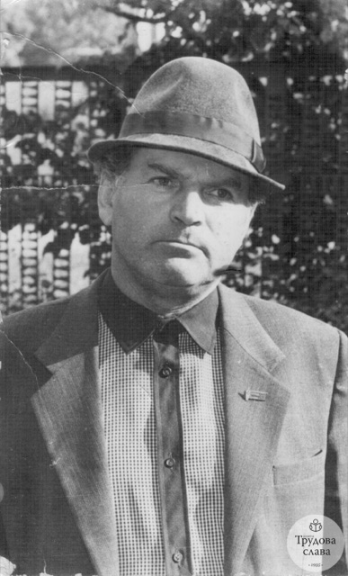
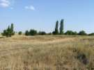

Поезія та проза · 16 липня 1937 — 29 липня 2012

Григорій Григорович Крячко — український поет, прозаїк і журналіст із села Новий Стародуб Петрівського району на Кіровоградщині. Понад тридцять років віддав районній газеті «Трудова слава», а у зрілому віці прийшов до художнього слова — видав збірки «Заворожений степом» (2002) та «Повінь» (2004). Його вірші стали піснями, а оповідання звучали на українському радіо.
Цей сайт — зібрання його творів, упорядковане родиною.
«Хотілось, щоб і моє ім'я та книги послужили нащадкам доброю настановою, прикладом незрадливої любові до рідного краю, зачарування красою природи, людини.»
— Григорій Крячко, з листа 2011 року
Нотатки біля назв збережено з першої версії сайту.
Чотирнадцять віршів — про степ і жнива, про Київ і Скіфію, про війну та кохання.
Чотирнадцять оповідань та новел — повоєнне дитинство, степові ночі, люди рідного села.
